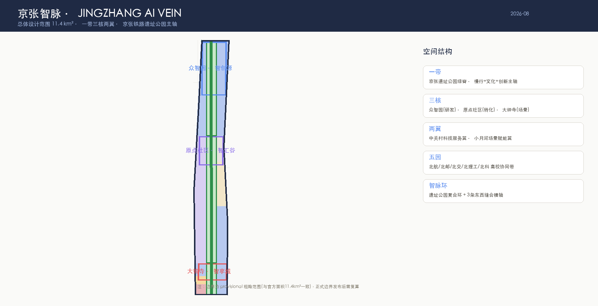
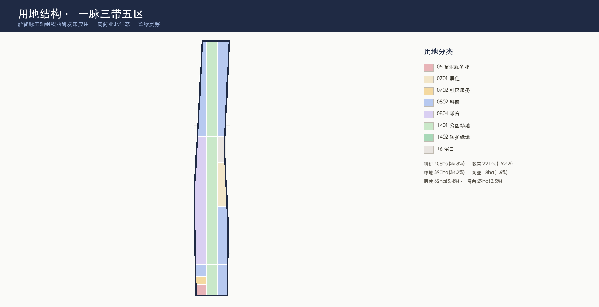
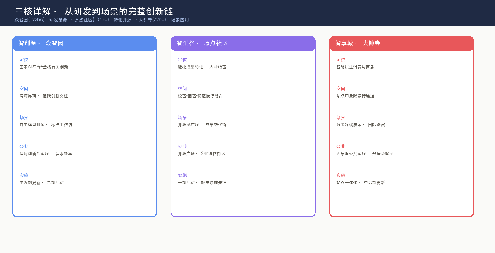
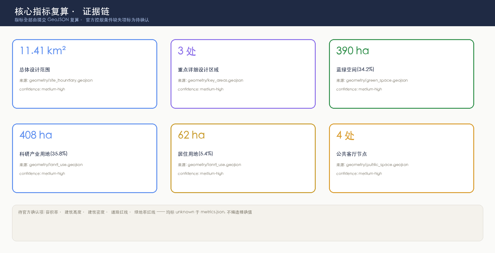

JingZhang AI Vein — An AI Urban Organism Threaded by a Rail Green Spine
Centered on the Jing-Zhang Railway Heritage Park spine, the JingZhang AI Vein concept proposes a longitudinal green spine connecting three cores (Zhongzhiyuan·Origin R&D / Origin Community·Transformation & OSS / Dazhongsi·Scenario & Consumption), two wings (Zhongguancun Service Wing / Xiaoyuehe Scenario Wing), and five university-connection parks, forming a complete R&D-to-scenario AI innovation chain across 11.4 km².
JingZhang AI Vein — An AI Urban Organism Threaded by a Rail Green Spine
> **Core Concept**: A hundred years ago, Zhan Tianyou used a railway to define "self-reliance". A hundred years later, turn that railway's heritage park into a **vein** — a green spine along which learning, creating, validating, and living flow like blood. **JingZhang AI Vein** lets the "arteries" and "veins" of AI innovation converge at the heart of Haidian.
Design Basis and Source Inventory
This formal proposal takes the "Centennial Jing-Zhang AI Innovation Belt International Urban Design Open Call Prequalification Announcement" issued by the Haidian Branch of the Beijing Municipal Commission of Planning and Natural Resources as its primary basis 来源, with the agent-facing taskbook excerpt 来源, the machine-readable site package brief/site-package/ 来源, the public source registry 来源, and the processed fact pack 来源 as machine-readable basis. The boundary uses the organizer-provided provisional rough polygon 来源来源, labeled provisional_constraint, official_boundary=false空间数据 — it closely matches the official announcement areas (overall 11.4 km² / Zhongzhiyuan 192.1ha / Origin 104.3ha / Dazhongsi 72.0ha) but is for design generation and discussion only, not an official redline or precise-area basis; all layers and metrics must be recalculated when official polygons are published 指标.
Professional standards basis: 标准, 标准, 标准, 标准, 标准, 标准, mapped to design layers 空间数据, 空间数据, 空间数据.

**Concept-attribute declaration**: All spatial judgments in this proposal are **open co-creation conceptual suggestions**, not a substitute for formal planning, not government approval conclusions, and do not involve statutory conclusions on regulatory-plan adjustments/FAR/height/road redlines/retain-renovate-demolish (see Risk chapter) 来源标准.
Three-Level Scope Working Framework
| Level | Scope | Area | Design Depth | Objective |
|---|---|---|---|---|
| Coordinated research | North 5th Ring-West Zhimen-Jingzang-Wanguanhe | 43.6 km² | Industrial/ecological/strategic | Build an "university-origin-OSS-collaboration-enterprise-conversion-public-experience-international-communication" innovation chain 来源 |
| Overall design | 1-2 km around the heritage park | 11.4 km² | Regulatory-plan-level urban design | Vein green spine + three cores + two wings + five parks structure 空间数据 |
| Key detailed design | Three key areas | 368.4 ha | Detailed/comprehensive planning depth | Each core reaches developable detailed design 深度空间数据 |

**Overall spatial structure — "One Belt, Three Cores, Two Wings, Five Parks"**:
`` ═════════ Zhongzhiyuan · Origin R&D (192ha) ═════════ Full-stack R&D · Standards & Governance Zhongguancun Service Wing ◄──┐ ┌──► Xiaoyuehe Scenario Wing (global factor allocation) │ VEIN GREEN SPINE │ (AI+ scenario landing) ├── Heritage Park Spine ──┤ Campus-park stitching · OSS release │ ═════════ Origin Community · OSS Valley (104ha) ═════════ Conversion · Talent Special Zone · Open Source │ VEIN GREEN SPINE │ Station integration · Four-quadrant links │ ═════════ Dazhongsi · Scenario City (72ha) ═════════ Scenario & Consumption · International Pitch ═══════════ Five Parks = BUAA · BUPT · BJTU · BIT · USTB Belt ═══════════ ``
Coordinated Research Area: Industry and Future-City Study
Naming and Logo System [agent.1]
- **Primary name**: 京张智脉 / JingZhang AI Vein (JZ-Vein). "Vein" carries the double meaning of vessel and pattern — the spatial thread along the rail line, and the lifeblood channel through which innovation flows; "AI" marks the new AI culture, "JingZhang" anchors a century of self-reliance.
- **Logo direction**: An abstracted "Y-shaped data-flow fork" from the Jing-Zhang railway switch, its three tracks representing the three cores, with a dot at the junction representing the "AI Origin" — a century ago the railway forked toward distance; today data forks toward intelligence. Visual system: "rail black + vein green + origin blue", extended to signage, maps, station identity, and event VI [agent.1]标准.
- **Naming system**: The three cores are named "Origin R&D / OSS Valley / Scenario City" (R&D-conversion-application loop); the wings "Zhongguancun Technology Service Wing / Xiaoyuehe Scenario Empowerment Wing"; the five parks "Vein · University Collaboration Belt" — all offered as candidate reference schemes for the official naming call.
Five Functions and Three-Area-Two-Wing Synergy Loop [agent.1][agent.2]
| Function | Spatial Anchor | Synergy Loop |
|---|---|---|
| AI full-stack independent innovation system | Zhongzhiyuan·Origin R&D (full-stack R&D + standards governance) | Upstream R&D 空间数据 |
| World-class AI innovation ecosystem | Zhongguancun Technology Service Wing (global factor allocation) | Capital/IP/global network injection |
| AI+ scenario empowerment paradigm | Xiaoyuehe Scenario Wing + Dazhongsi | Scenario validation + consumer application 空间数据 |
| Intelligent AI vibrant city | Origin Community + Five Parks + Heritage Park | Campus-park-community stitching 空间数据 |
| Global AI governance discourse | Zhongzhiyuan governance showcase + international events | Events export global influence [agent.6] |
5-8 Global AI Innovation Ecosystem Cases (readable digest) [agent.2]
| Case | Lesson | Transfer to Haidian |
|---|---|---|
| Silicon Valley Sand Hill Road + Stanford | Shortest university-capital-startup loop | Origin Community conversion street + Zhongguancun Service Wing capital |
| Boston Kendall Square | MIT-adjacent life-science ecosystem | Five-parks university belt (BUAA/BUPT differentiated) |
| Singapore one-north | Campus-as-laboratory (AI+traffic/health live tests) | Xiaoyuehe Scenario Wing + Zhongzhiyuan test ground |
| Helsinki Smart Kalasatama | Citizen co-created agile district | Origin Community 24h collaboration block + public participation |
| London King's Cross | Rail heritage renewal + knowledge-economy mix | Vein green spine = heritage park activation |
| Tokyo Shibuya/Marunouchi | Transit-station vertical mixed use | Dazhongsi four-quadrant station integration |
| Seoul DMC | Content industry + international communication cluster | Dazhongsi smart consumption + international pitch hall |
| Shenzhen Nanshan | Full-chain hardware entrepreneurship | Zhongzhiyuan full-stack + edge compute stations |
All cases are synthesized from public information as conceptual reference directions, not precise descriptions or commitments about any case [agent.2]来源.
Overall Design Area: Urban Renewal and Regulatory-Plan-Depth Urban Design
Land-Use Structure (16 parcels · full coverage · zero overlap)
Organized along the vein spine as "R&D west, application east; commercial south, ecology north", fully covering the overall design area with no overlap or gaps 空间数据:
| Code | Use | Area | Share | Spatial Logic | |:--:|------|-----:|-----:|---------| | 0802 | Research (four parcels) | 408.3ha | 35.8% | R&D dual wings beside the vein 空间数据 | | 1401/1402 | Green & open space (four vein parks + Qinghe wedge) | 389.6ha | 34.2% | Vein spine N-S + Qinghe waterfront wedge 空间数据 | | 0804 | Education (university belt + north) | 221.0ha | 19.4% | Five-parks collaboration along the west | | 0701/0702 | Residential + community service | 75.1ha | 6.6% | Talent housing near Origin Community | | 05 | Commercial services | 18.1ha | 1.6% | Dazhongsi south gateway district | | 16 | Reserved (strategic) | 29.1ha | 2.5% | Elastic reserve for AI iteration uncertainty |
Urban Renewal Framework: Retain-Renovate-New-Reserve
- **Retain**: the heritage park itself, heritage units along the line, existing university campuses, major public facilities (e.g., Qinghuayuan Station cultural resource) 空间数据.
- **Renovate**: low-efficiency industrial land in the three cores, station-adjacent parcels, old-community micro-renewal — **directional strategy only, no parcel-level retain-renovate-demolish conclusions** 深度.
- **New-build**: new infrastructure along the vein (edge compute stations, AI public-service points, slow-traffic bridge reserves).
- **Reserve**: 29.1ha elastic land north of Dazhongsi 空间数据 for AI-industry iteration uncertainty.
Building and Intensity Control (pending-confirmation labels)
Building height, FAR, density, setback — **official regulatory conditions are missing**, all marked unknown in metrics.json 指标指标指标; this proposal only suggests representative building footprints 空间数据 as form concepts, without fabricating precise controls 深度深度.
Key-Area Detailed Design

Zhongzhiyuan AI Self-Dependent Innovation Acceleration Area (Origin R&D · 192ha) 空间数据
- **Positioning**: national AI platform + full-stack independent innovation (full-stack system + governance discourse).
- **Spatial structure**: Qinghe waterfront innovation belt (N) + vein green spine (C) + R&D HQ cluster (S) 空间数据.
- **Industry**: model red-team test ground, standards workshops, governance showcase, low-carbon compute experience.
- **Public space**: Qinghe innovation hall + waterfront wedge 空间数据空间数据.
- **Mobility**: outer arterial to North 5th Ring 空间数据.
- **Implementation risk**: Qinghe blue-line/flood conditions, full-stack ecosystem maturity pending (see Risk).
Beijing AI Origin Community (OSS Valley · 104ha) 空间数据
- **Positioning**: campus-adjacent conversion + talent special zone + open-source system (world-class ecosystem).
- **Spatial structure**: campus-park-block stitching, east-west stitching axis 空间数据.
- **Industry**: OSS release hall, conversion street (incubation/IP/legal/finance), 24h collaboration block.
- **Public space**: OSS plaza + public code wall + AI contribution honor wall (agent honor display pilot) 空间数据.
- **Implementation**: phase-1 start with lightweight facilities first 深度空间数据.
Dazhongsi AI Industry Cluster (Scenario City · 72ha) 空间数据
- **Positioning**: intelligent-native new business + scenario application + international exchange.
- **Spatial structure**: four-quadrant pedestrian connectivity + smart consumption complex + international pitch hall 空间数据空间数据.
- **Industry**: agent/terminal showcase, content consumption, data-element hall, international pitch.
- **Mobility**: south-gateway E-W arterial + station integration 空间数据.
- **Implementation risk**: station engineering and four-quadrant links require transit/municipal conditions (see Risk).
AI Innovation Ecosystem, Personas, and AI+ Scenarios
User Personas (5) [agent.3]
| Persona | Needs | Spatial Response | Self-Check Boundary |
|---|---|---|---|
| OSS developer | release/collaborate/test/reputation | OSS plaza + release hall + public code wall | no personal trajectory collection; aggregate only |
| Startup team | low-cost office/compute entry/product lab | shared test ground + edge compute stations | compute/data services require separate authorization |
| Enterprise visitor | showcase/business/international reception | Dazhongsi pitch hall + station transfer | corporate marks/cases must be cleared |
| Local resident | commute/leisure/community services | vein slow loop + community services + tiered events | no commercial profiling of residents |
| University faculty/students | conversion/cross-campus collaboration/daily walking | five-parks stitching + conversion stations + AI education points | campus data/research requires authorization |
AI Scenario Cards (12, ≥10 required) [agent.3]
| # | Scenario Card | Spatial Carrier | Type | |:--:|--------|---------|:--:| | 01 | OSS Release Hall | Origin Community·OSS Plaza | Industry | | 02 | Governance Sandbox | Zhongzhiyuan·Standards Workshop | Governance | | 03 | Edge Compute Station | Vein spine corridor | New infra | | 04 | AI Slow-Mobility Navigation | Vein spine | Mobility | | 05 | International Pitch Hall | Dazhongsi·Station quadrants | Industry | | 06 | Qinghe Low-Carbon Innovation Corridor | Zhongzhiyuan·Qinghe frontage | Blue-green | | 07 | Campus Conversion Street | Origin Community·stitching axis | Industry | | 08 | Data-Element Hall | Dazhongsi·data-asset showcase | Governance | | 09 | AI Living Sample Street | South community·commercial node | Living | | 10 | Global AI Open Week Route | Vein spine·event system | Operation | | 11 | Autonomous Delivery Pilot Loop | Origin Community·stitched blocks | Mobility | | 12 | AI Education Experience Station | Five Parks·university belt | Education |
AI Industry Test/Validation Scenarios (3) [agent.3]
1. **Model red-team test ground** (Zhongzhiyuan) — safety evaluation/standards validation, bookable and visitable. 2. **Agent commerce sandbox** (Dazhongsi) — restricted compliant trials of agents + terminals + data elements. 3. **Autonomous delivery + AI-traffic live-test loop** (Origin Community) — small-scale live validation, requiring authority approval.
All test scenarios are **conceptual suggestions**, requiring authority approval, data-minimization and human-review compliance before piloting; not approved operations [agent.3]来源.
Land Use, Building Scale, and Retain-Renovate-Demolish
Design Intent and Spatial Logic
The land-use structure is organized around the "vein green spine": **west is the R&D/education belt** (Zhongzhiyuan R&D core, university belt, Origin conversion), **east is the application/industry belt** (industry office, smart consumption, residential), **the central vein spine** carries blue-green, slow mobility, and culture. This directly answers the three positionings — Heritage Culture Belt (spine), Urban AI Living Experience Belt (blue-green + slow + scenarios), AI Integration Innovation Belt (R&D × application wings) — weaving the three cores into a continuous whole through four N-S vein parks and three E-W stitching axes.
Retain-Renovate-Demolish Framework (method layer)
- **Retain**: heritage park, heritage units (Qinghuayuan Station), existing campuses, major public facilities, mature communities — expressed as constraints 空间数据.
- **Renovate**: low-efficiency industrial land in the three cores, station-adjacent parcels, old-community micro-renewal — directional strategies include ground-floor function swaps (AI showcase/public services along the vein), internal block restructuring (OSS plaza, conversion street), building performance upgrades (low-carbon retrofit, PV integration).
- **New-build**: new infrastructure along the vein (edge compute stations, AI public-service points, slow-traffic bridge reserves), a small number of landmark industry carriers in the three cores.
- **Reserve**: 29.1ha elastic land north of Dazhongsi 空间数据 as strategic reserve for future compute, scenario, or public-service needs.
Building Scale and Evidence Boundary
Representative footprints (R&D HQ cluster, incubator, consumption complex, low-carbon labs) express form concepts in 空间数据; height/FAR/density/setback are **missing official regulatory conditions**, all unknown in metrics.json 指标指标指标, without fabricating precise values. Parcel-level retain-renovate-demolish conclusions **must** await formal regulatory plans, ownership, and survey confirmation by professional teams; this proposal provides method and directional strategy only 深度.
Mobility, Transit, Municipal, and Public Services
Mobility and Slow Traffic (Vein composite system) 深度
- **Vein green spine (slow main axis)**: 9.7km N-S slow/cycling/cultural corridor 空间数据 linking the three cores and five parks — the spatial skeleton of the "Urban AI Living Experience Belt" 空间数据.
- **Three E-W stitching axes**: south-gateway arterial (Xizhimen-Dazhongsi) 空间数据, Origin stitching axis 空间数据, Zhongzhiyuan outer arterial (North 5th Ring) 空间数据 — stitching east-west across the rail-cut heritage.
- **Transit-station integration**: Dazhongsi four-quadrant pedestrian links (concept strategy, engineering pending), slow-traffic transfer at stations along the line.
- **Note**: roads are design suggestion alignments, not redlines; rail alignments, bridges/tunnels, and municipal pipelines are explicitly **outside** this proposal (see Risk).
Municipal and New Infrastructure 深度
- Edge compute stations (public compute access nodes) + distributed energy (aligned with green-power policy) + AI public-service points as new-infrastructure prototypes; operation models and capacity standards await special deepening.
Blue-Green Space, Public Space, and Urban Character
Vein Blue-Green System 深度
- **Four vein parks** (south 48.3ha / middle 193.9ha / north 144.3ha / north-gate 2.1ha) 空间数据 run N-S as the carrier of the "Heritage Culture Belt".
- **Qinghe waterfront wedge** 空间数据 connects the ecological corridor, aligning with the "East-Data-West-Compute" low-carbon narrative.
- **Blue-green ratio**: green 34.2% 指标, public-space nodes 4 指标 (Dazhongsi/Origin/Zhongzhiyuan/North-gate plazas) 空间数据.
Urban Character and AI Pilgrimage Landmarks [agent.4]
- **Character tone**: "rail black (heritage) + vein green (ecology) + origin blue (innovation)" three-color system, unified signage [agent.5].
- **Three AI pilgrimage landmarks (≥3 required)**:
- **Honor display system**: OSS contribution wall → annual "Vein Star" list → selected-proposal contributor GitHub-ID inscriptions (echoing the open call's "name carved on Jing-Zhang" long-term commemoration).
- **Note**: all landmarks are conceptual; heritage/green/blue-line constraints follow statutory procedures; no engineering conclusions [agent.4]来源.
1. **AI Origin Monument** (Origin Community OSS plaza) — honoring the origin of OSS and independent innovation, with an agent-contribution honor wall (contributor GitHub-ID inscription pilot). 2. **Vein Switch Installation** (mid-spine) — public art from the Jing-Zhang switch, metaphor of data-flow forking. 3. **Qinghe "Self-Reliant Core" Overlook** (Zhongzhiyuan Qinghe frontage) — telling the "self-reliant core" story from chip design to application.
Renewal Project List, Implementation Policy, and Phasing
Renewal Project List
| ID | Project | Type | Phase | Key Dependencies | Evidence | |:--:|------|------|:--:|------|------| | JZ-01 | Vein spine slow-traffic stitching | Public/Mobility | 1 | road redline, under-bridge space, traffic review | 空间数据 | | JZ-02 | OSS plaza + honor wall | Public/Operation | 1 | public-space permit, event safety | 空间数据 | | JZ-03 | Dazhongsi four-quadrant links | Transit/Slow | 2 | station, municipal pipelines, engineering | 空间数据 | | JZ-04 | Zhongzhiyuan Qinghe innovation frontage | Blue-green/Showcase | 2 | river blue line, flood conditions | 空间数据 | | JZ-05 | Edge compute station network | New infra | 3 | energy, compute, security, operator | 空间数据 | | JZ-06 | Global AI Open Week route | Operation/Brand | 1 | event permits, copyright clearance | 空间数据 |
Phasing 深度空间数据
- **Phase 1 · Vein launch (2026-2028)**: heritage park + Origin Community — spine stitching, OSS plaza/honor wall, first Open Week (lightweight first) 空间数据.
- **Phase 2 · Three cores (2028-2031)**: Zhongzhiyuan R&D core + Dazhongsi station integration 空间数据.
- **Phase 3 · Full domain and wings (2031+)**: full-domain quality, wing deepening, reserve release on demand 空间数据.
Global AI Innovation Event System and Long-Term Operation [agent.6]
- **Annual event system**: ① "Vein · Global AI Open Week" (spring: OSS releases + scenario open days + pilgrimage route) ② "Centennial Jing-Zhang AI Culture Season" (autumn: culture narrative + international communication) ③ monthly "Origin Community Demo Day" (developer pitches + investment matching).
- **Brand IP**: Vein VI extended to event visuals; developer-community operation (contribution honor system, annual "Vein Star", GitHub-ID inscriptions).
- **Conversion pathway**: event traffic → park visit → landing services (Zhongguancun Service Wing: capital/IP/policy) → enterprise location → ecosystem accumulation.
- **Operation boundary**: all event systems are **conceptual suggestions/reference schemes**; actual events require negotiation with authorities and operators; not confirmed arrangements or government commitments [agent.6]来源.
Indicators, Area Recalculation, and Compliance Matrix
Indicator Recalculation 深度
All computable indicators are recalculated from submitted GeoJSON in EPSG:4548 (see metrics.json 指标指标指标指标指标指标指标指标). Existing-conditions diagnosis is based on public information and organizer materials 来源, with evidence boundary recorded in 深度. **Three indicator tiers**:
1. **Geometrically recomputable** (known): overall design area 11.41km², blue-green 390ha (34.2%), research 408ha (35.8%), public nodes 4, building footprints 4, phases 3. 2. **Official-control pending** (unknown): FAR, height, density, road redlines, green-line redlines — marked unknown with reasons in metrics.json; no fabricated precision. 3. **Operational-performance** (design suggestions): AI innovation index, talent density, slow-mobility accessibility, event participation — in compliance_matrix and visual; not passed off as audited data.
Compliance Matrix
All announcement 1.3/1.4/1.5 tasks and agent.1-agent.6 tasks are mapped in compliance_matrix.json to sections, layers, indicators, drawings, HTML, and sources; professional standards in standard_matrix.json; all 15 design-depth items marked complete in design_depth_matrix.json.

Risk, Copyright, and Compliance
Risk and Missing-Data List 深度
| Risk/Gap | Level | Mitigation/Status | |----------|:--:|----------| | Official boundary/key-area polygons missing | High | provisional rough boundary used (area-consistent); full recalculation when official data arrives 来源 | | Regulatory conditions (FAR/height/density/redlines) missing | High | metrics unknown; text "pending confirmation"; no fabrication 深度 | | Existing buildings/ownership/retain-demolish no public data | High | method framework and directional strategy only 深度 | | Transit-station engineering/municipal pipelines | Medium | station integration and engineering links written as "concept strategy"; special deepening required | | Event permits and copyright | Medium | event system conceptual; images/fonts/marks cleared one by one | | AI-scenario data and privacy | Medium | data minimization + human review + authorization boundaries (see scenarios) |
Copyright and Compliance Statement
- Based on public information and organizer-cleared materials; no non-public planning drawings, non-public spatial data, or personal privacy data; no fabricated official endorsement or planning conclusions 来源.
- Figures' terrain/current-condition information is conceptual illustration, not precise surveying; company names/cases are conceptual references only.
- Generation-method disclosure: generated by an AI agent in the open-call workflow from the structured task package; all sources, limits, and assumptions are registered in sources.json and assumptions.json; human reviewers may request repair via self-check, spatial review, and compliance matrices 来源标准.
References
- brief/public-brief.md · brief/site-package/design_brief.json · allowed_design_space.json · agent_taskbook.json · enums/ · ranges/planning_limits.json · schemas/
- data/source_registry.json · data/processed/agent_fact_pack.md · project_scope_summary.csv · agent_task_requirements.csv · source_use_matrix.csv · missing_data_checklist.csv
- Standards snapshots: standards/references/*.md
- Citation index: 来源来源来源来源来源来源来源标准标准标准标准标准标准深度深度深度深度深度深度深度深度深度深度深度深度深度深度空间数据空间数据空间数据空间数据空间数据空间数据空间数据空间数据指标指标指标指标指标指标